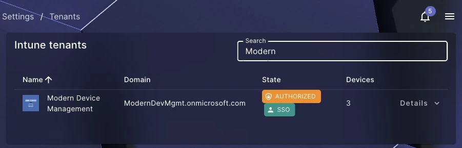
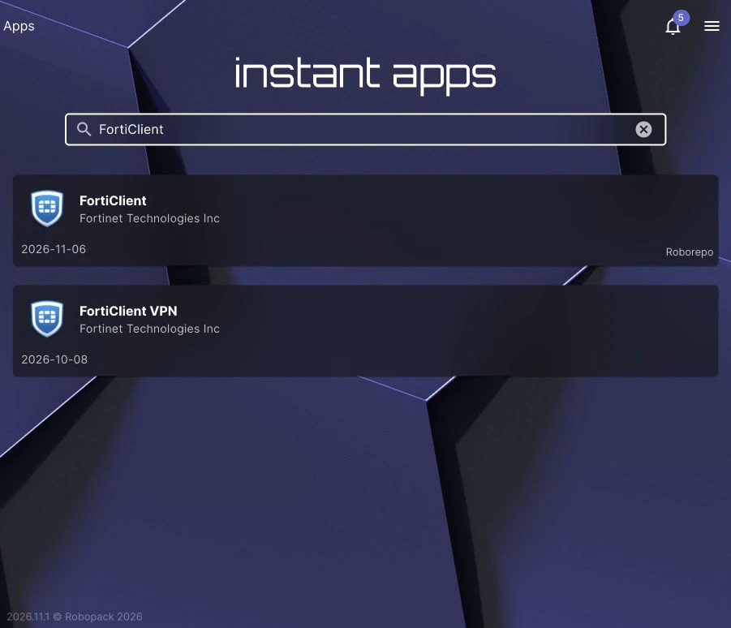
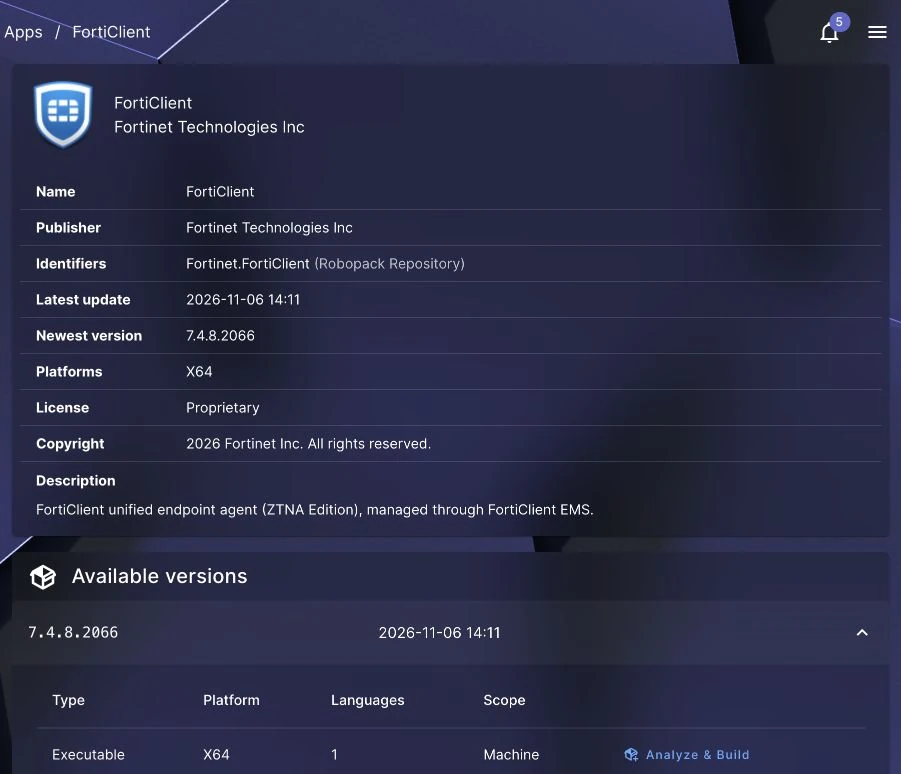
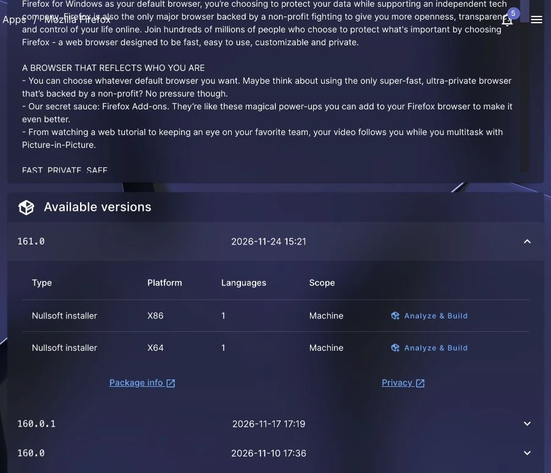
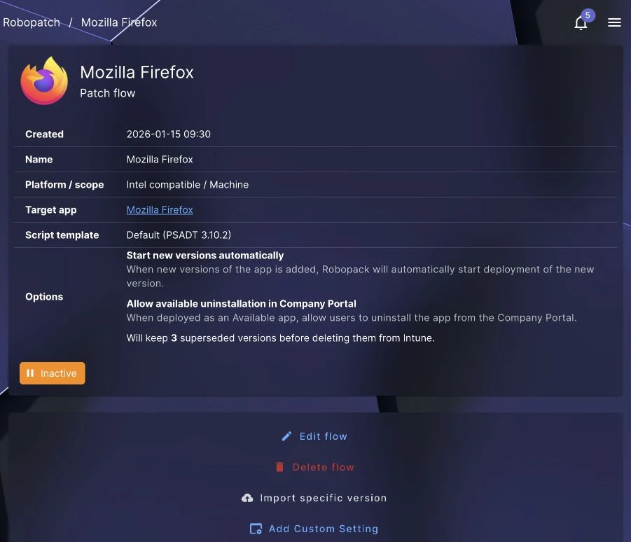
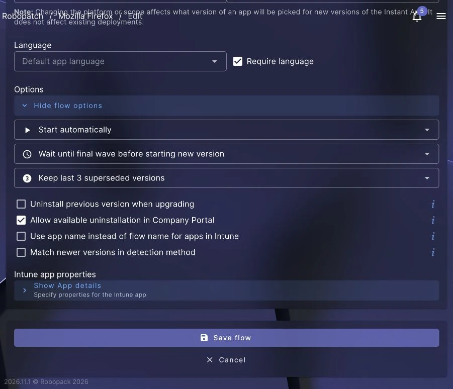

Roborepo in Robopack: What Changes for Intune Patching
Robopack now maintains its own application repository. If you use it to patch Intune apps, you can keep your existing flows. The useful work is checking which package you are getting and what happens after that package reaches the catalogue.
I opened my Modern Device Management lab to look at two examples: FortiClient, where the edition changes what you deploy, and Firefox, where an existing inactive flow explains why a newer catalogue version has not moved through that flow.
Advertisement. This article was prepared for the Friends of Robopack programme, which offers rewards for eligible contributions. The product link is a personal tracking link.
1. Check the tenant before looking at the catalogue
Sign in to Robopack with the Entra account for your demo or management organisation. Open Settings > Tenants and check the tenant name, domain and connection state.
For this walkthrough I used ModernDevMgmt.onmicrosoft.com. The existing connection showed AUTHORIZED. I reused it and did not change permissions, create packages or start deployments for the screenshots.


If your tenant is not connected yet, follow the tenant connection guide with the administrator responsible for that connection. Reading the shared catalogue and granting an application permission to write Intune apps are different tasks. You do not need to reconnect a working tenant to inspect Roborepo.
2. What changed on 8 November
Roborepo replaced Robopackâs previous Winget-based application source on 8 November 2026. Robopack now maintains those packages itself. The Microsoft Store remains a separate source. Robopack says existing Instant Apps, Robopatch flows and deployments continue without reconfiguration. The 9 November announcement explains the change.
In Whatâs new > Introducing Roborepo, the portal also dates the change to 8 November. For the update interval, Robopack says it checks for releases every 30 minutes and usually makes a new vendor version available in the catalogue within four hours. I would use that as a supplierâs usual delivery interval, not as a guaranteed deadline for installation on a laptop.
Robopack also announced 420 additional apps that were not available in Winget. That is Robopackâs count at launch. I have not independently compared all 420. Instead, I checked a specific application below.
3. Pick the right FortiClient edition
Open Instant apps and search for FortiClient.
In my session, the search returned FortiClient and FortiClient VPN. Open the first result and read its description before selecting a build. A familiar vendor logo is too little information to choose an endpoint security package.


The FortiClient entry showed these values:
- Identifier:
Fortinet.FortiClient, labelled Robopack Repository. - Version:
7.4.8.2066. - Description: the unified endpoint agent, ZTNA Edition, managed through FortiClient EMS.
- Installer choice: Executable, X64, Machine.


I could not find a matching Fortinet.FortiClient manifest in the public Winget repository during this check. I inspected the complete manifests/f subtree at commit e97eb5f and searched the repository for FortiClient. Neither returned a matching package. This is a dated comparison with Microsoftâs public repository, not a claim about every private Winget source or future additions.
That repository check compares catalogue coverage. For the Robopack workflow below, select the package from Roborepo in the portal.
For an Intune admin managing this edition, having the package in Roborepo could remove a separate custom-packaging task. It still needs the correct licence, configuration and upgrade path for the environment. Fortinet distinguishes its enterprise and VPN-only offerings on the FortiClient download page. I would involve the person managing EMS before replacing or upgrading that client through another tool.
4. Review the package before importing it into Intune
From the chosen version, Analyze & Build starts Robopackâs packaging workflow. The Instant Apps documentation describes the generated install and uninstall commands, detection method and PSADT wrapper. I stopped at the catalogue inspection for this example; the FortiClient screenshots do not show a completed build or deployment.
When you continue in your own lab, keep the edition from the previous step throughout the process:
- Select the required architecture, language and installation scope.
- Review the installation and detection information produced for that package.
- Check the destination Intune tenant before importing.
- Start with a small, explicit test audience.
- Open the imported app again in Intune and inspect its properties and assignments.
For FortiClient, I would test an upgrade from the version actually in use, with the existing EMS configuration. After the upgrade, check that the service runs, the expected configuration remains and the device reconnects to EMS. Those are acceptance tests to perform, not results from this catalogue walkthrough.
The same approach applies to less sensitive applications: carry one package identity from source to installer to detection. If the app changes from user scope to machine scope, or from one edition to another, treat that as a deployment decision rather than a routine version increase. Microsoftâs Win32 app guide explains the corresponding Intune settings.
5. Follow Firefox from catalogue to flow
Firefox gives us a second check using something that already exists in my lab.
Open Instant apps > Mozilla Firefox and expand the newest Roborepo version. The page listed 161.0 with the displayed timestamp 2026-11-24 15:21, followed by x86 and x64 machine-scope installers. Firefox also has a separate Microsoft Store version list. Use the entry for the source you intend to deploy.


Next, open Robopatch > Patch flows and select the existing Firefox flow. Mine showed Inactive, with a 147.0 deployment still marked Pending. Its settings included Start new versions automatically, but the flow itself was inactive.


I left that flow unchanged. There is no measured vendor-to-device patch time in this example. What we can see is the newer package in the catalogue and the separate state of the old flow. If a version has not reached Intune, this is where I would start investigating before blaming the repository.
6. Check version handling before restarting a flow
Open Edit flow > Show flow options to review the saved choices. In my existing flow, the form showed automatic start, waiting until the final wave before starting a new version, and keeping three superseded versions. Match newer versions in detection method was not selected.


If an application also updates itself, test how its installed version interacts with detection. An exact-version rule and an equal-or-newer rule give different results when the device has already moved ahead. Keep the generated detection logic in that test; checking only the version in the portal misses the behaviour on the endpoint.
For the rollout, I would use a small pilot with known-online devices and a manual release decision for a business-critical client. Robopackâs wave documentation calculates thresholds from devices that have picked up the assignment, not total group membership. A successful wave percentage therefore needs an audience-coverage check alongside it.
I would also review the current limitations before moving an existing package. Dependencies added directly in Intune are not preserved through Robopack updates. Pausing a Robopack wave also leaves its existing Intune assignment active. If you need to stop delivery, inspect the assignment as well as the flow state.
7. Measure the path to the device
For the next update you test, record these four events for the same application version. This is the measurement sheet I would use:
| Event | Evidence to save |
|---|---|
| Vendor publishes the release | Vendor release timestamp and the exact version, architecture and edition |
| Version becomes available in Roborepo | First observed catalogue availability, with timezone recorded |
| Package reaches Intune | Intune app ID, package version, assignment and import/deployment time |
| Device completes the update | Per-device installation result, installed version and functional check |
Keep observation time separate from release time. If you first open the catalogue at 16:00, that proves availability at 16:00; it does not tell you when the package first appeared. If the vendor publishes only a date, you cannot calculate an accurate hourly delay from that date.
Then inspect the application in Intune > Apps > All apps. Review its device installation status and investigate failed or missing results. On a representative endpoint, verify the installed version and whether the application still performs its job. For a VPN or ZTNA client, include connectivity in that check. An offline device remains an open rollout item even if the responding pilot devices succeeded.
If you use Radar for targeting, allow for its separate inventory cycle: Robopack documents a 24-hour refresh based on Intune Discovered Apps. I would not use a newly opened Radar view as a real-time installation receipt.
Roborepo gives me a catalogue entry for the FortiClient edition I could not find in the public Winget repository. My next step would be a controlled upgrade test for that exact edition, followed by a review of the Intune result. If you already use Robopack, pick one application your team still packages manually and make that comparison with its full product name and identifier.
For the earlier setup and deployment walkthroughs, see my Robopack A to Z series.
You can find product information at Robopack.
Stay healthy, Cheers
Jannik